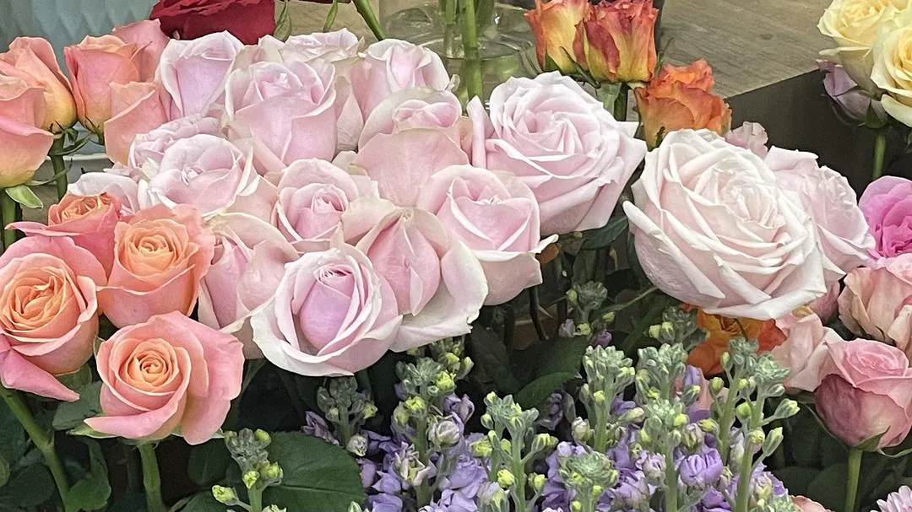

自评
D - 2024年5月1日

她像大多数自作聪明的女人一样，觉得自己强大到可以自由地谈论平等。若以付出来换取同等的被对待，这是隐性的道德绑架。
平等不基于此。个体间的平等基于平和富足，物质富足，精神富足。
若一个人持续向外索取，这很难生出力量，以解决自身的不足。向外索取的人不知道如何成为独立的单元，他们志不在于成长为b，而是要成为a'，成为a的附庸。

她像大多数自作聪明的女人一样，觉得自己强大到可以自由地谈论平等。若以付出来换取同等的被对待，这是隐性的道德绑架。
平等不基于此。个体间的平等基于平和富足，物质富足，精神富足。
若一个人持续向外索取，这很难生出力量，以解决自身的不足。向外索取的人不知道如何成为独立的单元，他们志不在于成长为b，而是要成为a'，成为a的附庸。